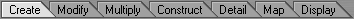
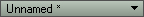
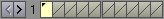
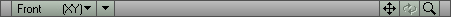
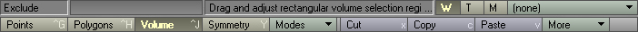

Lightwave/Lightwave Layout
Lightwave Modeler Interface
At first glance, the organization of Modeler, [Like MAX], can be a little confusing. There are several different areas. Some of them stay the same and some change when a different tool section is accessed (see below).
The Menus and Editors
These are the buttons located in the very top left corner of the modeller. They allow you to access file information, modeler preferences, and the various advanced editors that comes with Lightwave.
![[Lightwave-FileButtons]](images/lightwave-filebuttons.jpeg) |
- File
- Contains commands for saving, loading, and importing exporting files. Commands useful to you, besides the save and load, are the import/export commands. Lightwave is capable of importing and exporting 3ds files. 3ds is the format used most when transferring between modelling programs and Unreal. More information about the different options in the file menu will be available in a page called Lightwave/Menus?
Lightwave/Importing 3DS Lightwave/Exporting 3DS - Modeler
- Contains commands that allow you to change the modeler. These include options to change the color, the config files, and other such options. It also allows you to add and edit plugins. A more descriptive page will be made for this menu item. Lightwave/Menus?
- Surface Editor
- The surface editor allows you to change your surfaces, which are the textures that you apply to your model. It has advanced tools to change the different aspects of your textures, such as color, transparency, reflection, and bump mapping to name a few. The surface editor will be fully explained [To the best of my knowledge] here: [Lightwave/Surface Editor]? but not yet.

- Image Editor
- The image editor controls all the images you have imported into your sessions. These images are usually images that you have attached to your model's surfaces. Using the image editor you can control several different aspects of the image such as frame rate for animated images, and brightness/contrast for all images. All tools will be described here: [Lightwave/Image Editor]? but not yet.
- Presets
- The presets button allows you to view all the preset textures available in the texture directory. Simply choose what texture group you want, and it will show you all the textures in that group. Using the surface editor, you can then double click on a texture in the presets, and apply it to a surface in the surface editor.
The Tool Sections
The Lightwave Modeler tools are divided into 7 sections. These sections are shown in the picture below. When you click on a tab, the list of buttons for that section appear on the left. The buttons at the bottom, are not section specific. Because there are so many buttons in each section, each will have it's own page describing the function of each button.

|
- Create
- Lightwave/Create Tools
The create section is used to actually make your designs. It contains buttons for basic shapes, such as the box and ball. Using these 'primitives' together, you can create a bigger, and more complete model. - Modify
- [Lightwave/Modify Tools]?
This section has tools that allow you to 'modify' your model. Some examples are move, rotate, and size (or scale). Using these tools allows you to change the way your model looks without adding more primitives. - Multiply
- [Lightwave/Multiply Tools]?
Multiply contains tools to multiply vertexes and faces. There are several different ways to do this from mirroring, which creates an exact copy, to bevel and extruding. Each tool multiplies vertexes and faces in a different way. - Construct
- [Lightwave/Construct Tools]?
The tools in section section allow you to perform specialized actions to add or remove polygons. Such examples are triple, which makes every selected polygon into a 3 vertex polygon. This is useful for game editting because models need to be constructed from 3 vertex polygons. Another tool is subdivide which doesn't change the look of the model, but adds polygons to a polygon to allow better form. - Detail
- [Lightwave/Detail Tools]?
The Detail section allows you to control apsects of detail. This is where you control polygon surface information to attach skinning groups, and other tools for changing vertexes and skelegons. - Map
- [Lightwave/Map Tools]?
Contains tools for working with UV maps, weight maps, vertex color maps, and other such things. My knowledge of this section is almost non-existent so the explanation of this section won't come till later. - Display
- [Lightwave/Display Tools]?
The section has tools that control the display of Modeler. There are tools to allow you to change how you look at your model, tools that allow you to change the viewports in many ways, including their arrangement. [You can have just 2 viewports, for example]. The object visibility tools are here as well, they allow you to hide and unhide areas of your model.
The Model Paging Buttons
These buttons deal with viewing your different models. Each one of these buttons allows you to either view different parts of your model, or view different files that you have loaded.
 This button allows you to switch between different files that have been loaded. When a different file is loaded, all the models for that file are put into the pages.
 The blue arrow buttons allow you to flip through the pages. Each page can hold 10 objects. The tile that is fully yellow, is the selected model. If only the bottom is selected, that means you will see that model in the background. You will not see points or polygon information. It appears as a black wireframe.
![[Lightwave-PagingExample]](images/lightwave-pagingexample.jpeg) The main model is shown with face and wireframe information, the second model is shown only as a black wireframe. |
You may select more then 1 model by holding shift and clicking. The same goes with the bottom selections. Any tile that has a small triangle at the top, has information in it, even if it's just one vertex.
Vailias: Also the number keys (NOT numpad numbers) allow you direct access to the layers. Shift+number = Makes layer visible and editable In addition to any current layers. Alt+number puts that layer in background (wireframe). Shift+Alt+number adds background (uneditable wireframe) layers.
Viewport Controls
The next area that we're going to look at is the veiwport control buttons. These are the buttons located above each viewport, and they allow for some easy customization.

|
- Viewport Angle
- The first button is a combo box and display the different angles for which you can view your models. There are 9 options to choose from, and the options that display your model in a 2D view, show the planes that the graph uses in that view.
- Viewport Render Style
- The button with just a down arrow is the Render Style list. This list [Also a combo box] contains the different rendering options. Some options show just the wireframe, others show the polygons, and others show the model with the surface information applied. In order to understand each one, you should try them out yourself and use whichever one you prefer the best. Some of them, though, are better for certain situations.
- Pan, Rotate, and Zoom
- These buttons should be self explanatory. They allow you to change the view of the camera. You can move it with the pan button, and zoom in and out with the zoom button. The rotate button only works on the perspective Angle. These button don't actually change your model, they just change the view.
Bottom Toolbar
The bottom toolbar contains tools for different selection methods, cut/copy/paste tools, and others.

|
The Points button allows you to select just points (vertices). The Polygons button allows you to select faces. The volume modes allow you to make a 3d volume, and then selects points or polygons lying inside or outside that volume. (There are two volume modes, one which counts things that lie on the border as being "inside", and one which counts them as "outside".)
The modes drop down determines the point at which certain actions (such as rotating, bending, and stretching) happen; for example, "Action Center: Origin" will always rotate around the coodinate (0,0,0), while "Action Center: Pivot" will always rotate around the current layer's pivot point.
Then you have your copy/paste buttons. These buttons work on the currently selected points or polygons. They function the same as any other program uses them. The "more" drop down contains any buttons that don't have room to display.
The buttons on the far right determine what type of vertex map you are working with at the moment (and thus, control the type of maps that are being listed in the drop-down box to their right). In order, the buttons are: Weight, UV Texture, Morph, and in the most recent versions of the program, Vertex Color and Point Selections as well.
Related Topics
Comments
Mosquito: Please don't create any of the pages for the empty links on this page. I'm not sure if I actually want those pages yet.
Vailias: Oops. Didn't read this far before adding the 3ds import/export pages. The Export one could be rather helpfully though. There are a few Potholes in that operation that need to be pointed out.
Gregor: I'd suggest renaming this page to "Lightwave/Lightwave Interface" or "UI" or some such. "Lightwave Layout" means something very specific to Lightwave users. This page isn't very clear on which version of the program it refers to ... the interface gets tweaked a bit with each new version. Finally, the spelling is "Modeler", not "Modeller", so I have fixed that in a few places.